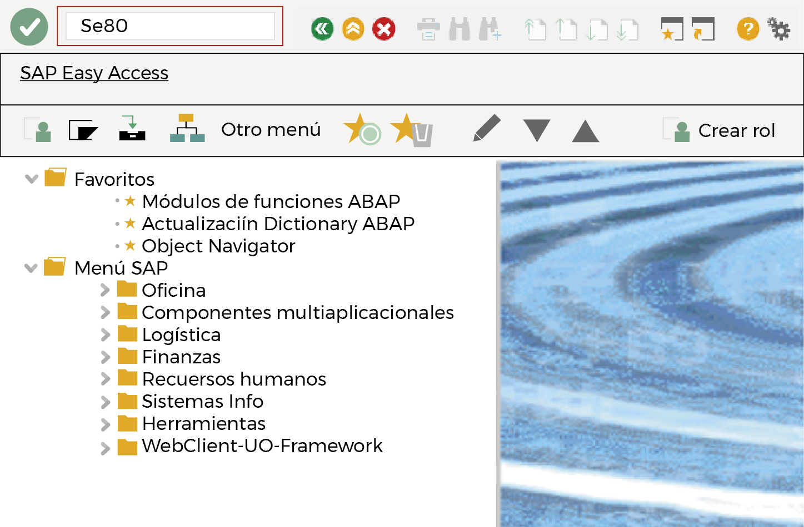
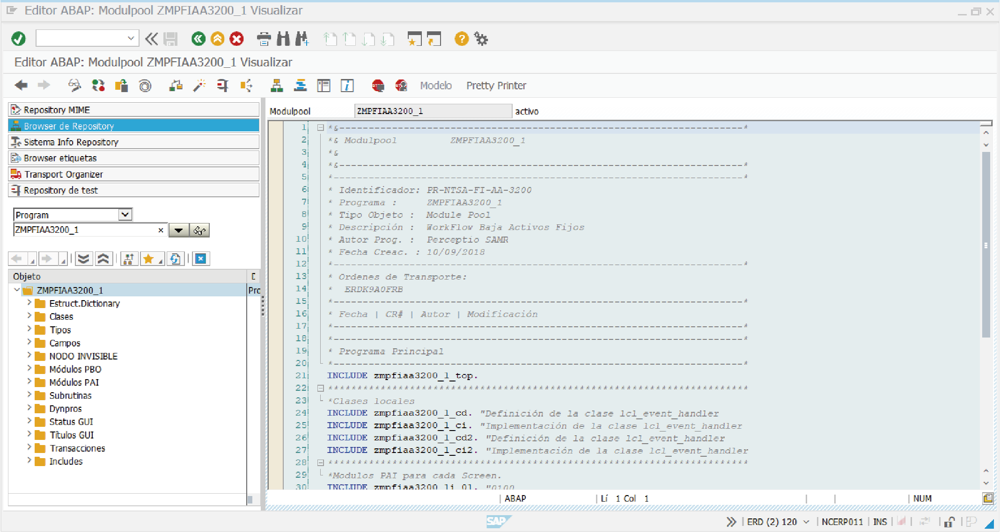

ToqueHaga clic en cada tema para leer su información
ToqueHaga clic en cada tema para leer su información
- Transacciones para navegar
- 
- SE80
-

Por la SE80 se ingresa al Object Navigator. Esta es la transacción central donde se puede acceder a la parte técnica de SAP.
- Comandos
-
/N
Para cancelar la transacción en curso.

/Nxxxx
Para llamar la transacción xxxx directamente desde otra transacción. Sin el prefijo solo se puede llamar xxxx desde la pantalla SAP Easy Access.

/o
Para visualizar el resumen de las sesiones de SAP GUI en su ordenador.

/oxxxx
Para llamar la transacción xxxx en una ventana nueva.

/NEND
Para finalizar la sesión con una ventana de diálogo de confirmación.

INEX
Para finalizar la sesión sin una ventana de diálogo de confirmación.

/l
Para borrar la ventana que se está utilizando actualmente.